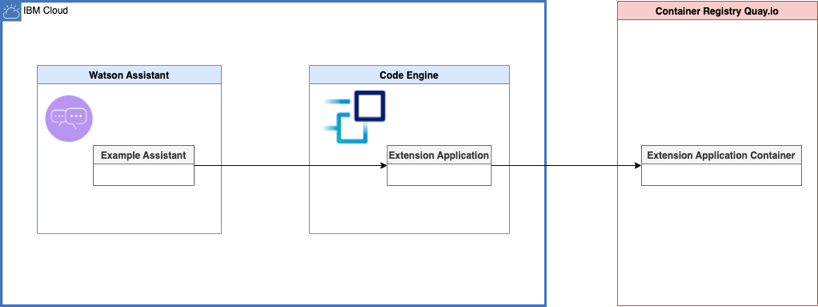
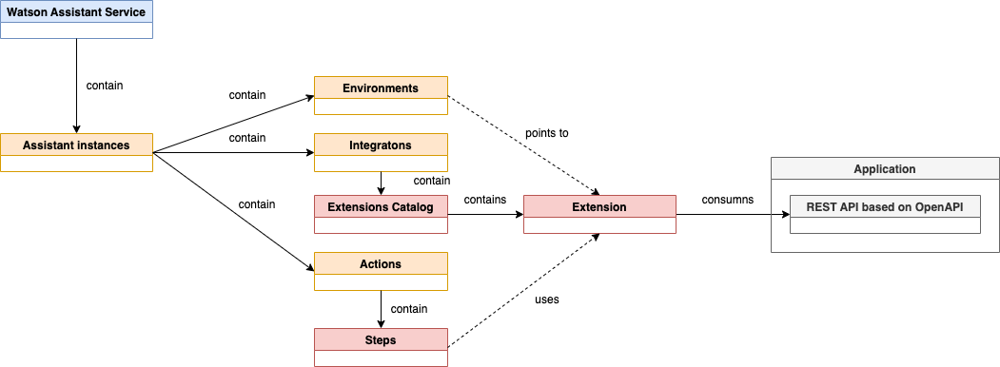

Examples to develop and configure Watson Assistant extensions APIs¶
The objective of this repository is to provide several simple implementation examples of applications, which will be integrated as an extension to IBM Cloud Watson Assistant service.
Each application needs to have an Open API specification (3.0 is supported).
This repository contains the source code and the steps how to do the setup and use the extension in the IBM Cloud Watson Assistant service. You can also visit the Assistant-Toolkit to get started with the development and usage of custom extensions.
Here is a 1-hour YouTube live stream related to this repository.

Used IBM Cloud services¶
- IBM Cloud Watson Assistant service The service will be used with a "lite plan" which creates no costs and limited usage.
- IBM Cloud Code Engine Serverless platform to run job or containers. Will be used with "pay as you use" , but the service provides a free tier.
The diagram shows the simplified architecture dependencies of the running example on IBM Cloud.

Simplified architecture dependencies¶
The following diagram displays the simplified architecture dependencies inside a Watson Assistant Service. In the examples we are going to integrate a custom extension to an assistant instance.

-
Add a custom extensions
- We have an
assistant instanceinsideWatson Assistant service. - The
assistant instancesimplified containsenvironments,integrationsandactions. - The integrations do contain a catalog of extensions.
- The extension catalog contains
Out-Of-The-Boxand maybecustomextensions. - A
custom extensionuses an Open API specification of an application to consume the REST API provided by this application.
- We have an
-
Make a custom extension available for usage in an action.
- Add the custom extension the
environmentsof theassistant instance.
- Add the custom extension the
-
Use the
custom extensionin astepof anaction.
Topics for each example¶
- Local development and containerization
- Deployment to
Code Engine - Creation of an
Open APIdocumentation - Set up of the integration between the
custom extensionand anassistant instance
Simple coding examples¶
- Node.js with
basic authenication - Quarkus (planned) with OpenID connect